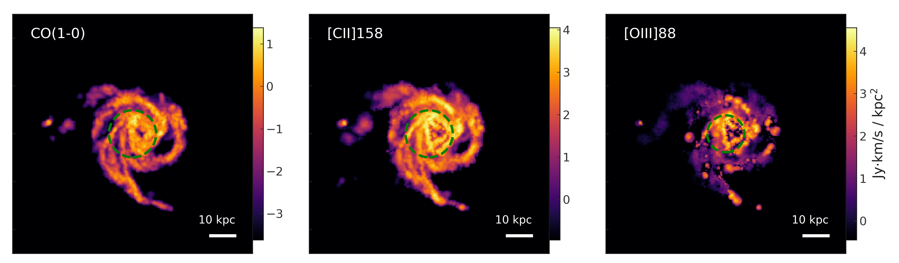

Overview¶
What the code does¶
SÍGAME is a module written in python that can make synthetic observations of line emission in the far-infrared (FIR) of galaxies at any redshift. This site describes version 3 of the code, as presented in Olsen et al. 2021. Input to the code is: A table of particle data for a galaxy taken from a cosmological simulation snapshot. Output from the code is: A 3D datacube of line flux in spatial coordinates in kpc (x,y,z) as well as moment 0 maps along any of the three axes. By default, SÍGAME is set up to predict the following emission lines [CII]158, [NII] (122 and 205 microns), [OI] (63 microns), [OIII] (88 microns), CI (at 609 and 369 microns), CO(1-0), CO(2-1) and CO(3-2).
An example¶
Below is an example of what SÍGAME can do. A simulated galaxy at z=0 is processed with SÍGAME to produce maps in three different FIR emission lines; the rotational CO(1-0) line, the fine-structure [CII]158 micron and the [OIII]88 micron line. The input galaxy to SÍGAME in this case came from the 25 Mpc/h volume box of the Simba suite of cosmological simulations [Davé et al. 2019].
See also https://kpolsen.github.io/SIGAME/index.html for a more general description.
Tributes¶
This version of SÍGAME makes use of the following software, publicly available elsewhere:
Contact¶
For questions, contact Karen at: kpolsen at protonmail . com